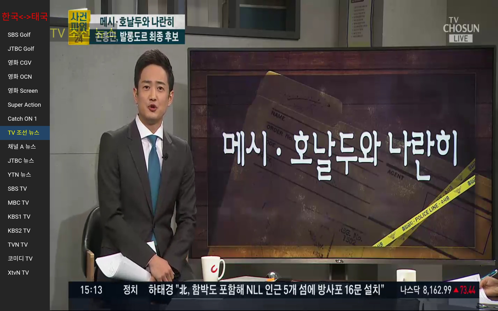
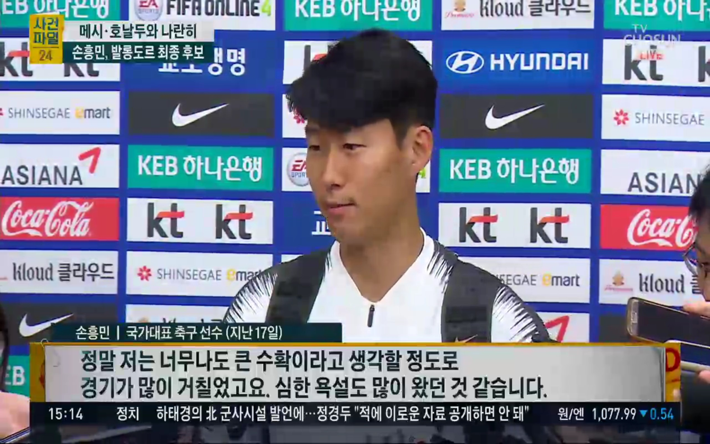
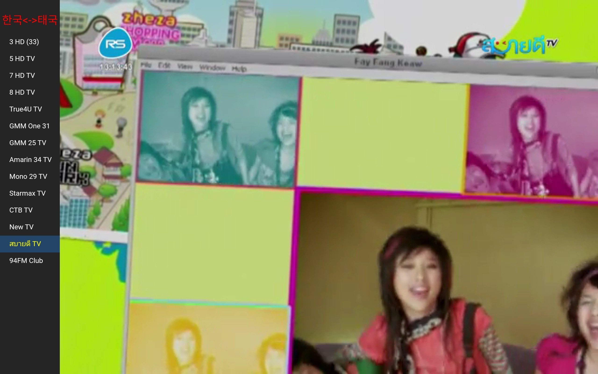
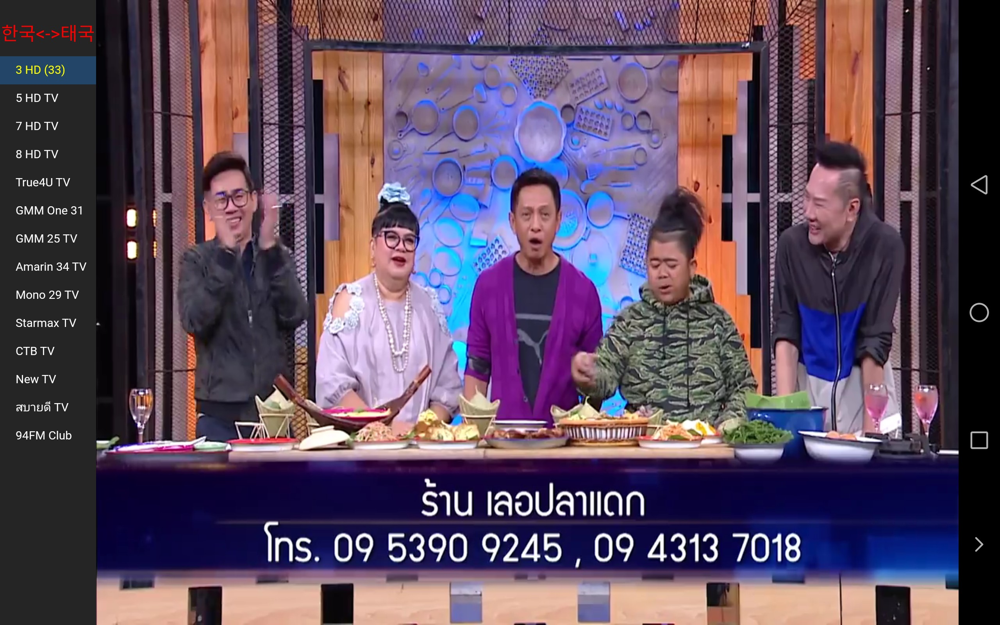

프로그램(안드로이드6 이상) 다운로드는 설명이후 화면 아래에 있습니다
한국방송은 4개 공중파, 골프(2채널), 영화(5채널), 뉴스/케이블등 18채널
태국방송은 기본채널/영화/다큐/노래방송/라디오방송등 14채널을 지원합니다.
거실에서 실제 티비를 보듯 하시려면 셋탑을 추천(별도문의)드리고 태블릿이나 스마트폰도 시청가능합니다
우선 무료체험(2일)을 경험하시고
1. 단기여행객용(*50명이하) : 5,10,15일
2. 거주자및 멤버(*최대30명한정) : 1개월(**장기적인 멤버는 받지않습니다)
*인원에 제한을 두는 이유는 서버폭주로 인해 서비스만족도가 떨어지거나 서버폐쇄를 막기위함입니다
**서비스가 장기적으로 가능한것이 아닌지라 무조건 팔고 나몰라라 먹튀하고 싶지 않기때문입니다.
그저 막팔아먹고 결국 나중에 사라져서 황당한 시청자 로써의 경험을 저도 했답니다..ㅠ.ㅠ
비용은 하루당 태국바트는 25바트 원화로는 1000원 정도입니다(태국/한국 은행으로입금)
전체화면과 메뉴간 전환은 화면상에서 더블탭(두번똑똑)으로 하고 종료는 뒤로가기 누르세요
메뉴표시된 상태에서의 한국방송(TV조선)
전체화면에서의 한국방송(TV조선)
메뉴표시된 상태에서의 태국방송(사바이디TV)
메뉴표시된 상태에서의 태국방송(33 HD)
아래 ShinWebTV 압축파일을 다운로드하고 압축을 풀어 ShinWebTV.apk를 설치하세요
구글플레이에 등록하지 않았기 때문에 설치시에는 출처를 알수없는 앱 설치를 허용하셔야합니다
안드로이드(버전6이상<마쉬멜로우>) 전용어플입니다